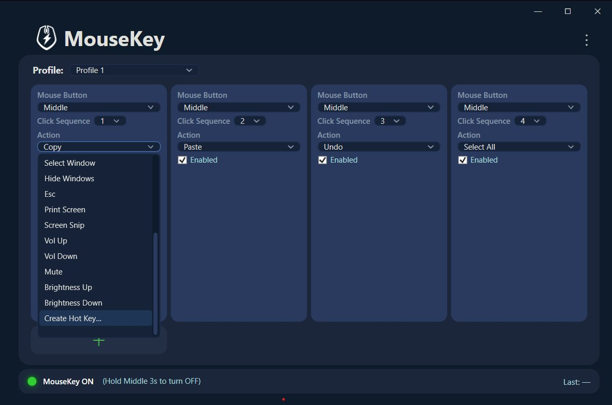
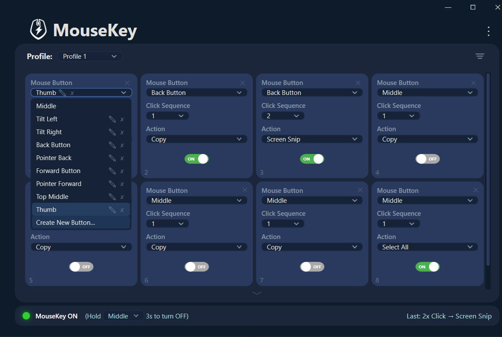

What is a click cadence?
A click cadence is how many times you rapidly press a mouse button before pausing. You already use one every day — a double click is a cadence of two. MouseKey extends this concept and lets you assign a different action to each cadence level on any mouse button:
- Single click (1 press) — triggers action #1
- Double click (2 rapid presses) — triggers action #2
- Triple click (3 rapid presses) — triggers action #3
- Quad click (4 rapid presses) — triggers action #4
- Quint click (5 rapid presses) — triggers action #5
MouseKey listens for the final count before firing. If you single click, it waits a beat to confirm you're done, then executes. If you double click, triple click, or go higher, MouseKey detects the full cadence and fires the corresponding action. The timing feels similar to a standard double click — fast enough to be natural, slow enough to be deliberate.
See it in action
Here's what a single middle button looks like with all five cadence levels configured in MouseKey:
That's 5 keyboard shortcuts replaced by one mouse button. A standard three-button mouse with left, right, and middle gives you up to 15 programmable shortcuts without buying any new hardware. A gaming mouse with back and forward buttons? Even more.
How this compares to X-Mouse Button Control
If you've looked into mouse remapping on Windows, you've probably come across X-Mouse Button Control (XMBC). It's a well-known tool that's been around for years and it does a solid job at basic button remapping — one button, one action.
But X-Mouse Button Control doesn't have click cadences. When you remap a button in XMBC, that button does one thing, period. There's no way to assign different actions to a single click versus a double click versus a triple click on the same button. That's the core difference with MouseKey — the cadence system multiplies what every button can do.
X-Mouse Button Control also has a steep learning curve. The interface is entirely text-based with layers, profiles, simulated keystroke editors, and advanced settings that assume you already know what you're doing. MouseKey takes the opposite approach: add a button, pick an action from a dropdown or use the built-in recorder to capture any keyboard shortcut, and you're done.
Not a knock on XMBC. X-Mouse Button Control is a capable tool with deep customization options, including per-application profiles and advanced macro sequencing. If you need that level of control, it's worth a look. But if you want more actions per button with less configuration, MouseKey's cadence system is a different approach entirely.
Click cadences for gaming
The cadence system is especially useful for PC gaming where keeping your hands on the mouse matters. Here are a few practical setups:
Valorant — Map your middle button cadences to quick utility actions: single click for ability 1, double click for ability 2, triple click for spike plant/defuse. Keeps your left hand free for movement keys instead of reaching across the keyboard for C, Q, or 4.
Counter-Strike 2 — Use a side button to cycle through buy menu shortcuts. Single click for armor, double click for AK/M4, triple click for AWP, quad click for defuse kit. Or map cadences to common callout text binds if you're using MouseKey's text recorder.
Fortnite — Assign building shortcuts to cadences on a thumb button. Single click for wall, double click for ramp, triple click for floor. Frees up keyboard binds for weapon slots and movement without sacrificing build speed.
In all three cases, the advantage is the same: you're getting more actions from fewer buttons without taking your hand off the mouse or reaching for uncomfortable key combinations. MouseKey's recorder lets you capture any keybind your game uses, so the setup takes seconds.

Click cadences for productivity
Gaming isn't the only use case. If you spend your day in a browser, IDE, or office suite, cadences eliminate a lot of repetitive keyboard reaching:
- Single click → Copy (Ctrl+C)
- Double click → Paste (Ctrl+V)
- Triple click → Select All (Ctrl+A)
- Quad click → Undo (Ctrl+Z)
- Quint click → Show Desktop (Win+D)
If you do data entry, development, or content creation, those five shortcuts alone probably cover actions you perform dozens or hundreds of times per day. Moving them to a single mouse button means your workflow stays in one hand — no more reaching for Ctrl combinations mid-task.
MouseKey also lets you use the recorder to capture text strings as macros. If you type the same email signature, template response, or code snippet repeatedly, record it once and assign it to a cadence. Triple click your side button and the entire string gets typed out instantly.
How to set it up in MouseKey
Configuring click cadences in MouseKey takes about 30 seconds per button:
- Open MouseKey and click the + button to add a new slot.
- Select a mouse button from the dropdown — Middle, Back, Forward, or any button your mouse has.
- Set the click sequence number — choose 1 for single click, 2 for double click, 3 for triple click, and so on.
- Choose an action — pick from built-in presets like Copy, Paste, Mute, or Screen Snip. Or select "Create Hot Key" to open the recorder and capture any keyboard shortcut or text string.
- Repeat for each cadence level. Add another slot with the same button but a different click sequence number, and assign a different action.
That's it. MouseKey handles the cadence detection automatically. No scripting, no config files, no learning curve.

The math: why cadences matter
Traditional mouse remapping gives you one action per button. That means a 5-button mouse gives you 5 custom shortcuts. With MouseKey's cadence system, those same 5 buttons give you up to 25 programmable shortcuts — each button carrying 5 distinct actions across single click, double click, triple click, quad click, and quint click cadences.
Even a basic 3-button office mouse (left, right, middle) goes from 3 possible remaps to 15. No extra hardware. No drivers. Just a different way of thinking about what a mouse button can do.
Try MouseKey
Turn any mouse button into 5 shortcuts. Built-in recorder for custom keyboard shortcuts. Works with any mouse on Windows.